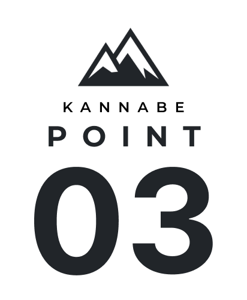
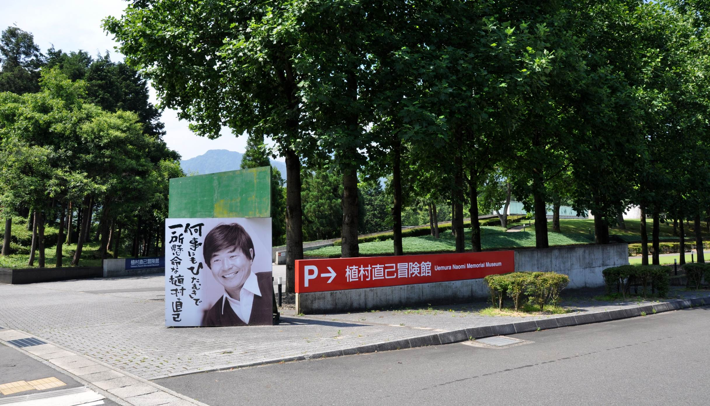

一年中遊べるリゾート地
新緑の芽吹きが出始める春は、ニジマス釣りや登山、夏は、パラグライダーやキャンプ、山々が色づき始める秋は、紅葉や滝巡りを楽しめます。冬にはアップ神鍋をはじめとしたスキー場でウィンタースポーツを楽しめます。神鍋高原は、冬だけでなく一年中遊べるリゾート地なのです。


ユネスコ世界ジオパークネットにも認定された自然
神鍋高原にはユネスコの世界ジオパークネットに地球科学的意味があると認められた景観がたくさんあります。近畿地方で最も新しいとされている「神鍋火山」や、その溶岩によって造られた落差24mの「八反滝」などがあります。


世界的な冒険家「植村直己」について学べる
世界最高峰「エベレスト」に日本人で初めて登頂したことで有名な植村直己さん。実は、豊岡市出身だったことからこの「植村直己冒険館」が建てられました。ここでは、彼の偉大な業績や冒険について学ぶことができます。
基本情報 Information
駐車場
あり
公式ホームページ